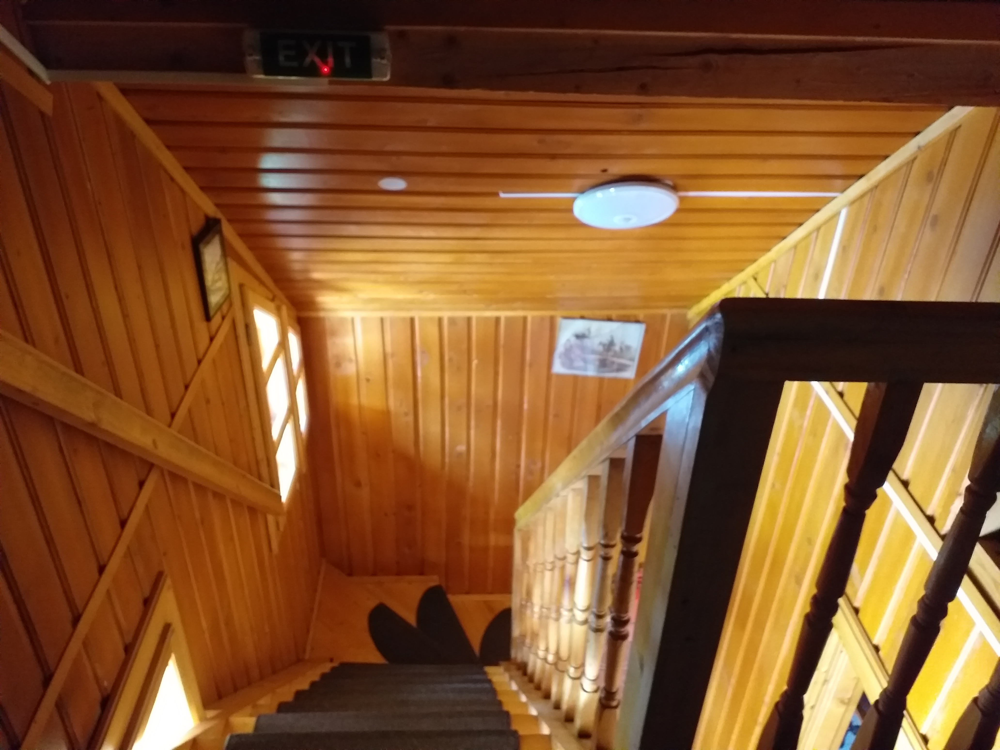
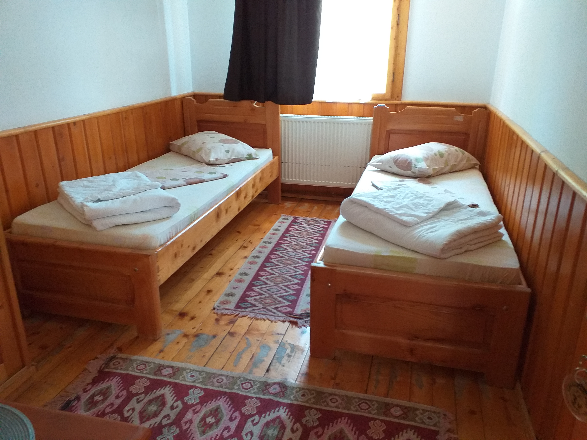
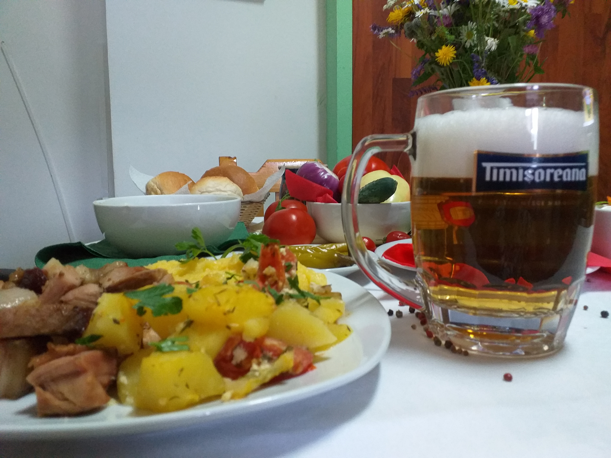
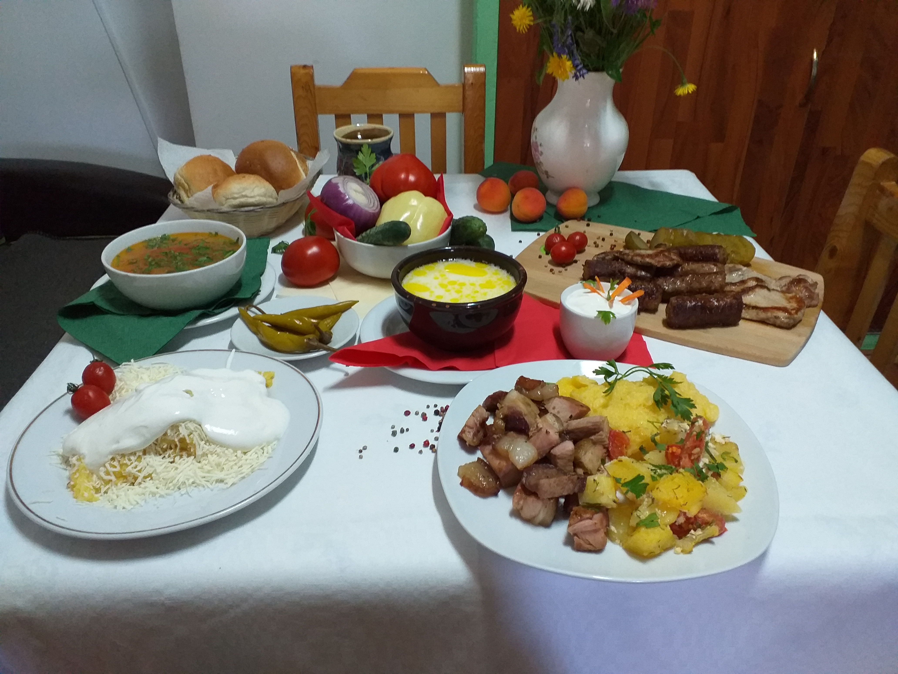

CAZARE
Cabana Bolboci are în componență 3 corpuri:
Cabana veche
Vila 1

Vila 2
Cabana veche dispune de 9 camere:
1 cameră cu 1 pat
3 camere cu 2 paturi
2 camere cu 3 paturi
2 camere cu 4 paturi și baie proprie
1 cameră cu 8 paturi
Vila 1 dispune de 5 camere:
1 cameră cu pat dublu și baie proprie
4 camere cu câte 2 paturi cu acces la 2 băi comune
Vila 2 dispune de 3 camere
Fiecare cu pat dublu și băi proprii.
Tariful pentru camerele dotate cu băi proprii este de 60 lei/persoană/noapte și 50 lei/persoană/noapte, pentru cele cu acces la băi comune.




